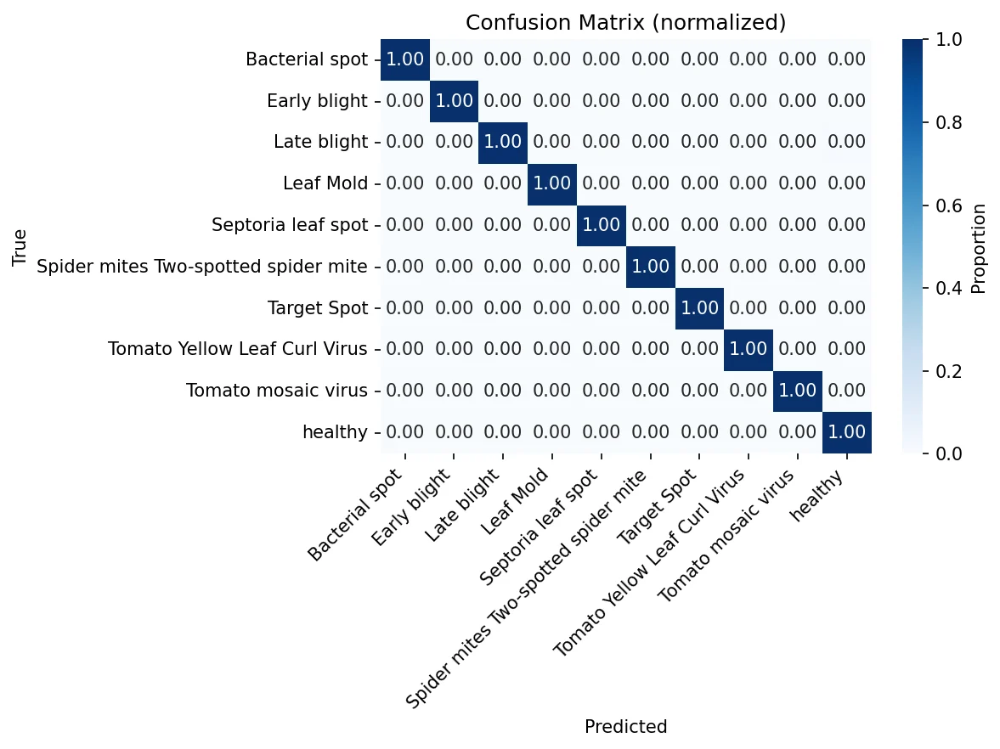
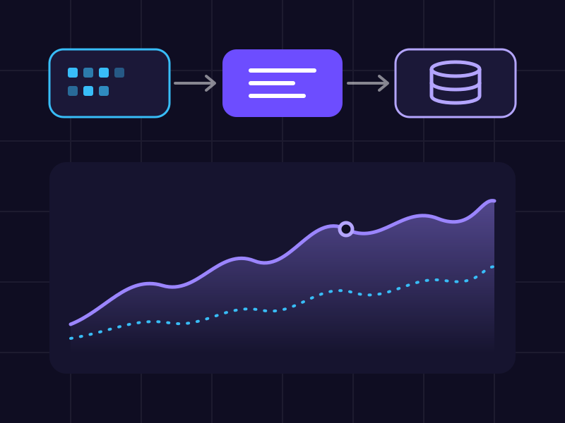
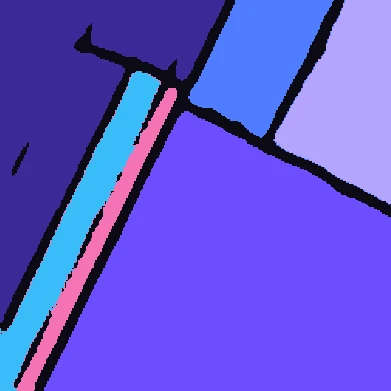

- Diagnóstico de máquinas com LLMFiz do começo ao fim. A telemetria sai do Cassandra, é resumida e vai para o Claude na Vertex AI. A resposta volta num formato estruturado, validado por schema, e aparece direto na tela do produto.
- Agentes para o CAN busMontei um sistema com vários agentes de LLM, usando servidores MCP, para descobrir o que significam mensagens CAN sem documentação. Os resultados são conferidos com dados conhecidos e testados num conjunto separado para evitar overfitting.
- Pipelines de telemetriaPipelines em Python que pegam a telemetria bruta (CAN/ISOBUS) e geram datasets organizados, mapas de cobertura em GeoJSON e arquivos de tarefa ISOXML no padrão da indústria.
- Histórico auditávelMudei a forma de guardar configurações no Cassandra. Antes os dados eram sobrescritos; agora cada mudança vira uma nova versão com período de validade (modelo bitemporal com TIMEUUID), e dá para saber como cada operação de campo estava configurada.
- Correções em produçãoEncontrei e corrigi bugs no serviço de ingestão, entre eles um erro de conversão de unidades no atraso de vazão e uma soma errada nos totais de produto aplicado, que bagunçava os relatórios.
- Vários fabricantesCriei um registro de plugins com decorators. Com ele, dá para suportar máquinas John Deere, Massey Ferguson, Fendt, Horsch, Kuhn e Trimble sem mexer no núcleo do pipeline.
Cientista de dados · Engenheiro de IA
Data Science, LLMs e agentes, deep learning
Trabalho há mais de 2 anos com IA aplicada ao agro. Coloco LLMs e agentes em produção, construo pipelines de séries temporais e pesquiso deep learning com imagens de satélite.
Sobre mim
Sou cientista de dados e engenheiro de IA, com mais de 2 anos de experiência. Na IoTag, cuido do pipeline de dados e da parte de IA de uma plataforma que recebe a telemetria de máquinas agrícolas. Fora do trabalho, pesquiso deep learning com imagens de satélite. O que mais me motiva é ver um modelo sair do notebook e ser usado por alguém.
Experiência
- Back-end e APIsDesenvolvi e mantive serviços de back-end e APIs REST usados nas principais funções da aplicação.
- Qualidade de dadosEscrevi rotinas para limpar, transformar e validar dados que chegavam de fontes bem diferentes.
- DeduplicaçãoUsei distância de Levenshtein e comparação aproximada de textos para achar registros duplicados na base.
Projetos

Mais em dados
- 2023 Covid-19 no Brasil Análise exploratória dos casos no Brasil e previsão com ARIMA e Prophet.
- 2024 Previsão de chuva na Austrália Comparei cinco modelos (regressão linear, KNN, árvore de decisão, regressão logística e SVM) para prever se vai chover no dia seguinte.
- 2026 Redes de Game of Thrones Grafos de quem interage com quem na 1ª e na 8ª temporada: métricas da rede, personagens mais centrais e comunidades.
- 2026 Registros duplicados com Levenshtein Workshop de extensão em que ensinei a usar distância de edição para achar clientes duplicados numa base.
O que eu faço
Trabalho em quatro frentes que se conectam: dados, machine learning, LLMs e visão computacional. Também cuido da nuvem e das APIs para que tudo isso chegue em quem vai usar.
Data Science e Machine Learning
Análise exploratória, estatística, séries temporais e modelos de machine learning, sempre com validação cruzada e métricas que façam sentido para o problema.
- pandas
- NumPy
- scikit-learn
- LightGBM
- SQL
- Validação cruzada

IA generativa e agentes
LLMs rodando em produção: vários agentes trabalhando juntos, ferramentas via MCP, RAG e respostas estruturadas validadas por schema.
- Claude · Vertex AI
- MCP
- RAG
- LangChain
- Hugging Face
- Prompt engineering

Engenharia de dados
Pipelines ETL/ELT para séries temporais com muito volume, modelagem no Cassandra e no PostgreSQL e rotinas de qualidade de dados, inclusive geoespaciais.
- Python
- SQL
- Cassandra
- PostgreSQL
- ETL / ELT
- GeoJSON

Visão computacional e deep learning
Segmentação, classificação e detecção com PyTorch, usando ensembles, TTA e transfer learning. Já trabalhei com imagens de satélite, de lavoura e industriais.
- PyTorch
- U-Net
- DeepLabV3+
- CNNs
- Ensembles
- Sentinel-2

Stack Moderna
Profissional em
 Python
Python pandas
pandas NumPy
NumPy scikit-learn
scikit-learn PyTorch
PyTorch Hugging Face
Hugging Face LangChain
LangChain Claude API
Claude API Google Cloud
Google Cloud Cassandra
Cassandra PostgreSQL
PostgreSQL Docker
Docker